graph TD
shadow_tower_part1a[Shadow Tower Part1 A] -- Tower Top --> shadow_tower_part2a[Shadow Tower Part2 A 2]
shadow_tower_part2a[Shadow Tower Part2 A] -- Top left --> shadow_tower_part1a[Shadow Tower Part1 A]
shadow_tower_part2a[Shadow Tower Part2 A] -- Top right --> shadow_tower_part3a[Shadow Tower Part3 A 4]
shadow_tower_part2a[Shadow Tower Part2 A] -- Jump --> shadow_tower_part2b[Shadow Tower Part2 B 2]
shadow_tower_part2b[Shadow Tower Part2 B] -- Upper --> human_world_solitary_region[Human World
Solitary Region 3]
shadow_tower_part2b[Shadow Tower Part2 B] -- Middle --> illusion_world_gloomy_domain[Illusion World
Gloomy Domain 3]
shadow_tower_part2b[Shadow Tower Part2 B] -- Edge --> water_world_watery_labyrinth_area[Water World
Watery Labyrinth Area 3]
shadow_tower_part3a[Shadow Tower Part3 A] -- Top right --> shadow_tower_part1c[Shadow Tower Part1 C]
shadow_tower_part3a[Shadow Tower Part3 A] -- Top left --> shadow_tower_part2a[Shadow Tower Part2 A 2]
shadow_tower_part3a[Shadow Tower Part3 A] -- Bottom --> shadow_tower_part1b[Shadow Tower Part1 B]
shadow_tower_part3a[Shadow Tower Part3 A] -- Jump --> shadow_tower_part3b[Shadow Tower Part3 B 4]
shadow_tower_part1b[Shadow Tower Part1 B] -- Edge --> shadow_tower_part3a[Shadow Tower Part3 A 4]
shadow_tower_part1b[Shadow Tower Part1 B] -- Middle --> earth_world_stone_cavern[Earth World
Stone Cavern 5]
shadow_tower_part1b[Shadow Tower Part1 B] -- Jump --> shadow_tower_part1c[Shadow Tower Part1 C]
shadow_tower_part1c[Shadow Tower Part1 C] -- Top --> shadow_tower_part3a[Shadow Tower Part3 A 4]
shadow_tower_part1c[Shadow Tower Part1 C] -- Middle --> shadow_tower_part3b[Shadow Tower Part3 B 4]
shadow_tower_part1c[Shadow Tower Part1 C] -- Edge --> monster_world_screeching_area[Monster World
Screeching Area 4]
shadow_tower_part3b[Shadow Tower Part3 B] -- Bottom middle --> human_world_solitary_region[Human World
Solitary Region 3]
shadow_tower_part3b[Shadow Tower Part3 B] -- Top edge --> earth_world_stone_cavern[Earth World
Stone Cavern 5]
shadow_tower_part3b[Shadow Tower Part3 B] -- Bottom end --> shadow_tower_part1c[Shadow Tower Part1 C]
shadow_tower_part3b[Shadow Tower Part3 B] -- Jump --> shadow_tower_part3c[Shadow Tower Part3 C 4]
human_world_solitary_region[Human World
Solitary Region] -- Skeleton --> water_world_sunken_river_area[Water World
Sunken River Area 6]
human_world_solitary_region[Human World
Solitary Region] -- Cemetery --> shadow_tower_part2b[Shadow Tower Part2 B 2]
human_world_solitary_region[Human World
Solitary Region] -- Grave --> earth_world_false_pit_cavern[Earth World
False Pit Cavern 4]
human_world_solitary_region[Human World
Solitary Region] -- Church --> shadow_tower_part3b[Shadow Tower Part3 B 4]
water_world_watery_labyrinth_area[Water World
Watery Labyrinth Area] -- Entrance --> shadow_tower_part2b[Shadow Tower Part2 B 2]
water_world_watery_labyrinth_area[Water World
Watery Labyrinth Area] -- Exit --> monster_world_false_eye_area[Monster World
False Eye Area 4]
illusion_world_gloomy_domain[Illusion World
Gloomy Domain] -- Ladder down --> shadow_tower_part3c[Shadow Tower Part3 C 4]
illusion_world_gloomy_domain[Illusion World
Gloomy Domain] -- Entrance --> shadow_tower_part2b[Shadow Tower Part2 B 2]
illusion_world_gloomy_domain[Illusion World
Gloomy Domain] -- Totem --> water_world_impure_pool_area[Water World
Impure Pool Area 4]
shadow_tower_part3c[Shadow Tower Part3 C] -- Fence --> illusion_world_gloomy_domain[Illusion World
Gloomy Domain 3]
earth_world_false_pit_cavern[Earth World
False Pit Cavern] -- Entrance --> human_world_solitary_region[Human World
Solitary Region 3]
earth_world_false_pit_cavern[Earth World
False Pit Cavern] -- Bridge --> earth_world_quaking_cavern[Earth World
Quaking Cavern 5]
earth_world_false_pit_cavern[Earth World
False Pit Cavern] -- Exit --> illusion_world_bewilderment_domain[Illusion World
Bewilderment Domain 5]
earth_world_false_pit_cavern[Earth World
False Pit Cavern] -- Jump in --> death_world_dark_castle_layer[Death World
Dark Castle Layer 5]
earth_world_false_pit_cavern[Earth World
False Pit Cavern] -- Totem --> illusion_world_dream_domain[Illusion World
Dream Domain 5]
water_world_impure_pool_area[Water World
Impure Pool Area] -- Entrance --> earth_world_poisonous_cavern[Earth World
Poisonous Cavern 5]
water_world_impure_pool_area[Water World
Impure Pool Area] -- Flush down --> human_world_forgotten_region[Human World
Forgotten Region 5]
water_world_impure_pool_area[Water World
Impure Pool Area] -- Totem --> illusion_world_gloomy_domain[Illusion World
Gloomy Domain 3]
monster_world_false_eye_area[Monster World
False Eye Area] -- Entrance --> water_world_watery_labyrinth_area[Water World
Watery Labyrinth Area 3]
monster_world_false_eye_area[Monster World
False Eye Area] -- Totem --> death_world_lingering_curse_layer[Death World
Lingering Curse Layer 5]
monster_world_screeching_area[Monster World
Screeching Area] -- Entrance --> shadow_tower_part1c[Shadow Tower Part1 C]
monster_world_screeching_area[Monster World
Screeching Area] -- Totem --> human_world_forgotten_region[Human World
Forgotten Region 5]
monster_world_screeching_area[Monster World
Screeching Area] -- Necron --> death_world_dark_castle_layer[Death World
Dark Castle Layer 5]
human_world_forgotten_region[Human World
Forgotten Region] -- Exit --> water_world_impure_pool_area[Water World
Impure Pool Area 4]
human_world_forgotten_region[Human World
Forgotten Region] -- Jump down --> earth_world_rotting_cavern[Earth World
Rotting Cavern 6]
human_world_forgotten_region[Human World
Forgotten Region] -- Totem --> death_world_dark_castle_layer[Death World
Dark Castle Layer 5]
human_world_forgotten_region[Human World
Forgotten Region] -- Drop in --> monster_world_screeching_area[Monster World
Screeching Area 4]
earth_world_stone_cavern[Earth World
Stone Cavern] -- Entrance --> shadow_tower_part3b[Shadow Tower Part3 B 4]
earth_world_stone_cavern[Earth World
Stone Cavern] -- Exit --> shadow_tower_part1b[Shadow Tower Part1 B]
earth_world_quaking_cavern[Earth World
Quaking Cavern] -- Entrance --> earth_world_false_pit_cavern[Earth World
False Pit Cavern 4]
earth_world_poisonous_cavern[Earth World
Poisonous Cavern] -- Poison --> water_world_impure_pool_area[Water World
Impure Pool Area 4]
earth_world_poisonous_cavern[Earth World
Poisonous Cavern] -- Rock guy --> human_world_cursed_region[Human World
Cursed Region 6]
earth_world_poisonous_cavern[Earth World
Poisonous Cavern] -- Entrance --> death_world_gate_of_the_dead[Death World
Gate Of The Dead 6]
illusion_world_bewilderment_domain[Illusion World
Bewilderment Domain] -- Exit --> death_world_undead_layer[Death World
Undead Layer 6]
illusion_world_bewilderment_domain[Illusion World
Bewilderment Domain] -- Entrance --> earth_world_false_pit_cavern[Earth World
False Pit Cavern 4]
illusion_world_dream_domain[Illusion World
Dream Domain] -- Totem --> earth_world_false_pit_cavern[Earth World
False Pit Cavern 4]
illusion_world_dream_domain[Illusion World
Dream Domain] -- Entrance --> fire_world_ashen_cavern[Fire World
Ashen Cavern 6]
death_world_lingering_curse_layer[Death World
Lingering Curse Layer] -- Door --> water_world_sunken_river_area[Water World
Sunken River Area 6]
death_world_lingering_curse_layer[Death World
Lingering Curse Layer] -- Box room --> monster_world_false_eye_area[Monster World
False Eye Area 4]
death_world_dark_castle_layer[Death World
Dark Castle Layer] -- Prison --> earth_world_hostile_rock_cavern[Earth World
Hostile Rock Cavern 6]
death_world_dark_castle_layer[Death World
Dark Castle Layer] -- Entrance --> illusion_world_worship_domain[Illusion World
Worship Domain 7]
death_world_dark_castle_layer[Death World
Dark Castle Layer] -- Lower totem 1 --> monster_world_screeching_area[Monster World
Screeching Area 4]
death_world_dark_castle_layer[Death World
Dark Castle Layer] -- Lower totem 2 --> human_world_forgotten_region[Human World
Forgotten Region 5]
death_world_dark_castle_layer[Death World
Dark Castle Layer] -- Upper totem --> earth_world_false_pit_cavern[Earth World
False Pit Cavern 4]
human_world_cursed_region[Human World
Cursed Region] -- Entrance --> fire_world_phoenix_cave[Fire World
Phoenix Cave 7]
human_world_cursed_region[Human World
Cursed Region] -- Guardian side --> earth_world_poisonous_cavern[Earth World
Poisonous Cavern 5]
earth_world_rotting_cavern[Earth World
Rotting Cavern] -- Entrance --> human_world_forgotten_region[Human World
Forgotten Region 5]
earth_world_hostile_rock_cavern[Earth World
Hostile Rock Cavern] -- Entrance --> death_world_dark_castle_layer[Death World
Dark Castle Layer 5]
earth_world_hostile_rock_cavern[Earth World
Hostile Rock Cavern] -- Boss room --> water_world_white_rain_area[Water World
White Rain Area 7]
fire_world_ashen_cavern[Fire World
Ashen Cavern] -- Cerberus --> fire_world_burning_cavern[Fire World
Burning Cavern 7]
fire_world_ashen_cavern[Fire World
Ashen Cavern] -- Start --> illusion_world_dream_domain[Illusion World
Dream Domain 5]
water_world_sunken_river_area[Water World
Sunken River Area] -- Pool --> human_world_solitary_region[Human World
Solitary Region 3]
water_world_sunken_river_area[Water World
Sunken River Area] -- Entrance --> death_world_lingering_curse_layer[Death World
Lingering Curse Layer 5]
death_world_gate_of_the_dead[Death World
Gate Of The Dead] -- Entrance --> earth_world_poisonous_cavern[Earth World
Poisonous Cavern 5]
death_world_gate_of_the_dead[Death World
Gate Of The Dead] -- Totem --> human_world_hidden_region[Human World
Hidden Region 7]
death_world_undead_layer[Death World
Undead Layer] -- King's room --> water_world_white_rain_area[Water World
White Rain Area 7]
death_world_undead_layer[Death World
Undead Layer] -- Entrance --> illusion_world_bewilderment_domain[Illusion World
Bewilderment Domain 5]
human_world_hidden_region[Human World
Hidden Region] -- Jail --> fire_world_phoenix_cave[Fire World
Phoenix Cave 7]
human_world_hidden_region[Human World
Hidden Region] -- Corridor --> fire_world_burning_cavern[Fire World
Burning Cavern 7]
human_world_hidden_region[Human World
Hidden Region] -- Totem --> death_world_gate_of_the_dead[Death World
Gate Of The Dead 6]
fire_world_phoenix_cave[Fire World
Phoenix Cave] -- Entrance --> human_world_hidden_region[Human World
Hidden Region 7]
fire_world_phoenix_cave[Fire World
Phoenix Cave] -- Exit --> human_world_cursed_region[Human World
Cursed Region 6]
fire_world_burning_cavern[Fire World
Burning Cavern] -- Entrance --> human_world_hidden_region[Human World
Hidden Region 7]
fire_world_burning_cavern[Fire World
Burning Cavern] -- Platform --> fire_world_ashen_cavern[Fire World
Ashen Cavern 6]
fire_world_burning_cavern[Fire World
Burning Cavern] -- Room --> illusion_world_worship_domain[Illusion World
Worship Domain 7]
water_world_white_rain_area[Water World
White Rain Area] -- Entrance --> death_world_undead_layer[Death World
Undead Layer 6]
water_world_white_rain_area[Water World
White Rain Area] -- Totem --> earth_world_hostile_rock_cavern[Earth World
Hostile Rock Cavern 6]
illusion_world_worship_domain[Illusion World
Worship Domain] -- Entrance --> death_world_dark_castle_layer[Death World
Dark Castle Layer 5]
illusion_world_worship_domain[Illusion World
Worship Domain] -- Connection --> fire_world_molten_cavern[Fire World
Molten Cavern 9]
illusion_world_worship_domain[Illusion World
Worship Domain] -- Exit --> fire_world_burning_cavern[Fire World
Burning Cavern 7]
illusion_world_worship_domain[Illusion World
Worship Domain] -- To Boss --> fire_world_molten_cavern[Fire World
Molten Cavern 9]
fire_world_molten_cavern[Fire World
Molten Cavern] -- Abraxus --> illusion_world_worship_domain[Illusion World
Worship Domain 7]
fire_world_molten_cavern[Fire World
Molten Cavern] -- Platform --> illusion_world_worship_domain[Illusion World
Worship Domain 7]
Human World
human_world_solitary_region
Item Memory used 7
Creatures score 72
object index 31 exit-door Skeleton -> water_world_sunken_river_area pos( 0 ,0 ,0),unknown( 0 ,0),destMapIndex( 37),rot( 1),fineY( 0)
object index 34 exit-door Cemetery -> shadow_tower_part2b pos( 0 ,5 ,0),unknown( 0 ,0),destMapIndex( 40),rot( 3),fineY(248)
object index 35 exit-door Grave -> earth_world_false_pit_cavern pos(245 ,0,245),unknown( 0 ,0),destMapIndex( 15),rot( 3),fineY( 0)
object index 38 exit-door Church -> shadow_tower_part3b pos( 0 ,3 ,0),unknown( 0 ,0),destMapIndex( 41),rot( 3),fineY(248)
0 item_136_soul_pod_5_sp
1 item_12e_dorados_ashes
2 item_127_acid_vaccine
3 item_10a_cune
4 item_126_bottle_of_light
5 item_127_acid_vaccine
7 item_11c_healing_potion
8 item_10a_cune
9 item_10e_sacred_feather
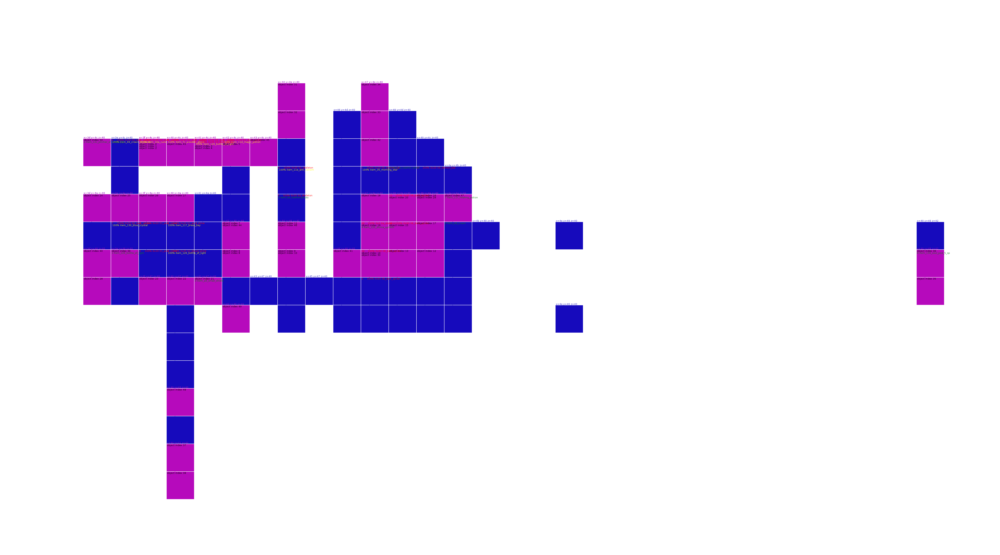
human_world_hidden_region
Item Memory used 9
Creatures score 84
object index 9 exit-door Jail -> fire_world_phoenix_cave pos( 2 ,0 ,2),unknown( 1 ,1),destMapIndex( 3),rot( 3),fineY( 0)
object index 13 exit-door Corridor -> fire_world_burning_cavern pos(242 ,0,242),unknown( 1 ,1),destMapIndex( 20),rot( 3),fineY( 0)
object index 26 exit-totem Totem -> death_world_gate_of_the_dead pos( 0 ,20 ,0),unknown( 0 ,0),destMapIndex(248),rot( 0),fineY( 0)
0 item_ef_deadly_bracelet
1 item_137_soul_pod_53_sp
2 item_11c_healing_potion
3 item_136_soul_pod_5_sp
4 item_11d_magic_potion
5 item_120_divine_symbol
6 item_10a_cune
7 item_127_acid_vaccine
8 item_138_soul_pod_29_sp
9 item_10c_torch
a item_12e_dorados_ashes
b item_120_divine_symbol
c item_127_acid_vaccine
d item_11c_healing_potion
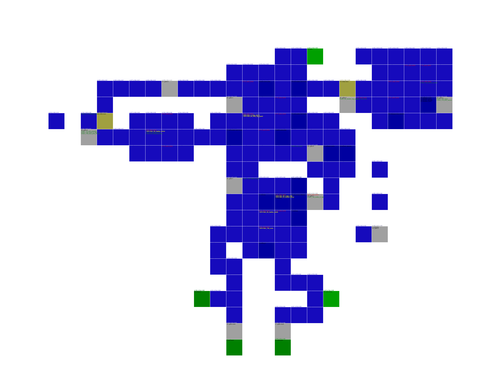
human_world_forgotten_region
Item Memory used 8
Creatures score 76
object index 18 exit-totem Totem -> death_world_dark_castle_layer pos( 0,243 ,0),unknown( 0 ,0),destMapIndex( 0),rot( 0),fineY( 2)
object index 34 exit-door Exit -> water_world_impure_pool_area pos(244 ,3,244),unknown( 1 ,1),destMapIndex( 10),rot( 1),fineY( 0)
object index 37 exit-door Jump down -> earth_world_rotting_cavern pos(245 ,0,245),unknown( 1 ,1),destMapIndex( 11),rot( 3),fineY( 0)
object index 41 exit-totem Drop in -> monster_world_screeching_area pos( 0 ,8 ,0),unknown( 3 ,0),destMapIndex( 0),rot( 8),fineY( 3)
0 item_10a_cune
1 item_124_poison_vaccine
2 item_11c_healing_potion
3 item_a1_buckler
4 item_11c_healing_potion
5 item_10e_sacred_feather
6 item_137_soul_pod_53_sp
7 item_11e_anti_venom
8 item_10a_cune
9 item_11c_healing_potion
a item_122_evil_eye
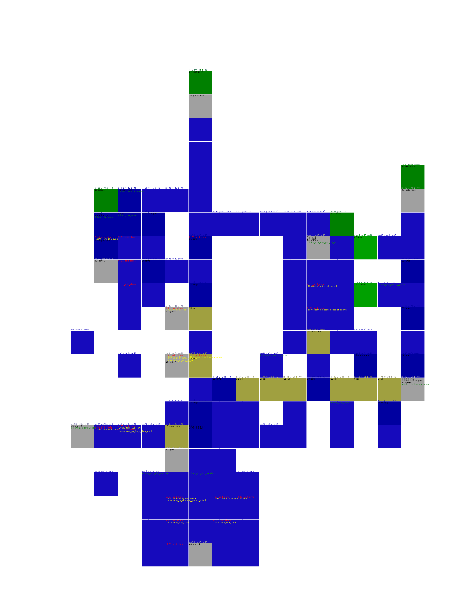
human_world_cursed_region
Item Memory used 6
Creatures score 44
21 0a_guardian_a 100% 0x50 pw80 42 103 89 110 93 72 36 a15 a16 m0 a30 a33 a91
100% item_11e_anti_venom
30 04_fat_mole_a 100% 0x30 pw0 0 0 0 0 0 0 0 a0 a0 m0
100% item_11c_healing_potion
object index 3 exit-door Entrance -> fire_world_phoenix_cave pos( 2 ,0 ,2),unknown( 1 ,1),destMapIndex( 3),rot( 3),fineY( 0)
object index 31 exit-door Guardian side -> earth_world_poisonous_cavern pos( 1 ,1 ,1),unknown( 0 ,0),destMapIndex( 27),rot( 2),fineY( 0)
0 item_11c_healing_potion
1 item_11c_healing_potion
2 item_11c_healing_potion
3 item_c_shadow_blade
4 item_122_evil_eye
5 item_11c_healing_potion
6 item_11f_anti_paralytic
7 item_126_bottle_of_light
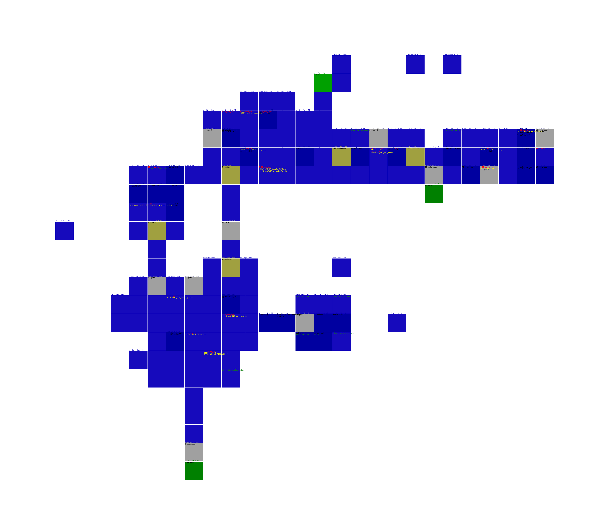
Earth World
earth_world_rotting_cavern
Item Memory used 6
Creatures score 48
30 0a_blank 100% 0x20 pw0 0 0 0 0 0 0 0 a0 a0 m5
object index 13 exit-door Entrance -> human_world_forgotten_region pos( 9 ,1 ,9),unknown( 1 ,1),destMapIndex( 6),rot( 3),fineY( 0)
0 item_120_divine_symbol
1 item_11c_healing_potion
2 item_16_guardian_broad_sword
3 item_d9_ring_of_protect
4 item_10a_cune
5 item_11c_healing_potion
6 item_e8_bracelet_of_balance
7 item_10a_cune
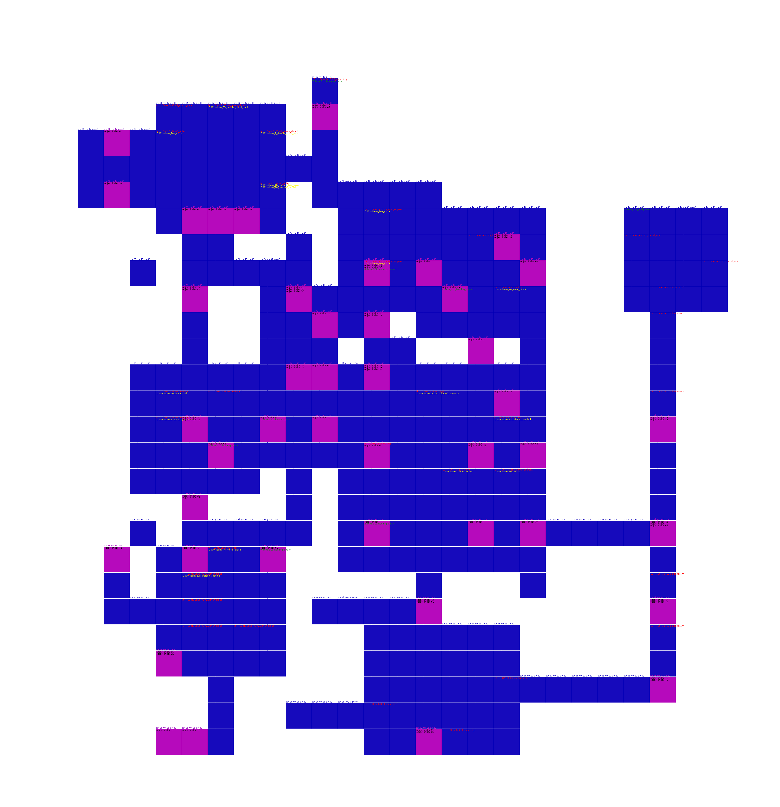
earth_world_poisonous_cavern
Item Memory used 7
Creatures score 68
20 00_duhrin 100% 0x10 pw65 124 92 80 70 86 58 30 a0 a0 m8
30 05_blank 100% 0x20 pw0 0 0 0 0 0 0 0 a0 a0 m0
31 04_auriel_b 100% 0x70 pw150 160 150 65 65 65 65 65 a75 a70 m9
32 0b_blank 100% 0x50 pw0 0 0 0 0 0 0 0 a0 a0 m0
33 0a_blank 100% 0x50 pw0 0 0 0 0 0 0 0 a0 a0 m7
object index 10 exit-door Rock guy -> human_world_cursed_region pos( 8,255 ,8),unknown( 1 ,1),destMapIndex( 1),rot( 3),fineY( 8)
object index 13 exit-door Poison -> water_world_impure_pool_area pos(244 ,0,244),unknown( 1 ,1),destMapIndex( 10),rot( 1),fineY( 0)
object index 17 exit-door Entrance -> death_world_gate_of_the_dead pos(248 ,0,248),unknown( 0 ,0),destMapIndex( 23),rot( 0),fineY( 0)
0 item_11d_magic_potion
1 item_11c_healing_potion
2 item_8_silent_sword
3 item_136_soul_pod_5_sp
5 item_12e_dorados_ashes
6 item_10a_cune
7 item_11c_healing_potion
8 item_3d_deadly_axe
a item_139_soul_pod_14_sp
b item_11c_healing_potion
1c item_11c_healing_potion
1d item_11c_healing_potion
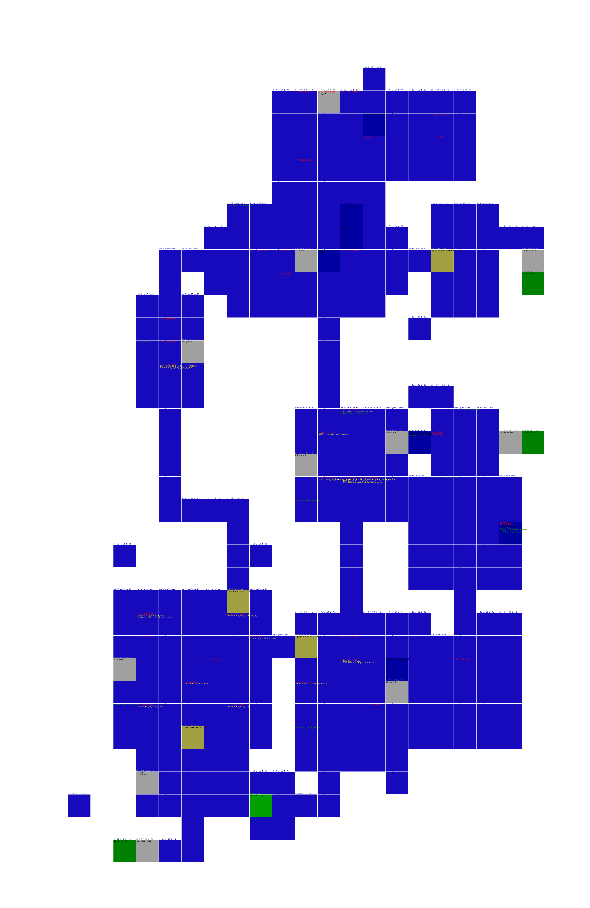
earth_world_stone_cavern
Item Memory used 7
Creatures score 53
13 0c_dybbuk 100% 0x25 pw65 60 42 80 80 78 76 68 a12 a14 m10
30 00_dybbuk 100% 0x50 pw60 70 40 80 80 78 76 68 a12 a14 m10
31 04_dybbuk 100% 0x0 pw60 70 40 80 80 78 76 68 a12 a14 m10
32 04_dybbuk 100% 0x0 pw60 70 40 80 80 78 76 68 a12 a14 m10
object index 4 exit-door Entrance -> shadow_tower_part3b pos(252 ,3,252),unknown( 0 ,0),destMapIndex( 41),rot( 0),fineY(248)
object index 7 exit-door Exit -> shadow_tower_part1b pos( 3 ,6 ,3),unknown( 1 ,1),destMapIndex( 0),rot( 1),fineY(248)
0 item_125_dust_of_rage
1 item_120_divine_symbol
2 item_ea_bracelet_of_composure
3 item_11e_anti_venom
4 item_124_poison_vaccine
5 item_124_poison_vaccine
6 item_10e_sacred_feather
7 item_11c_healing_potion
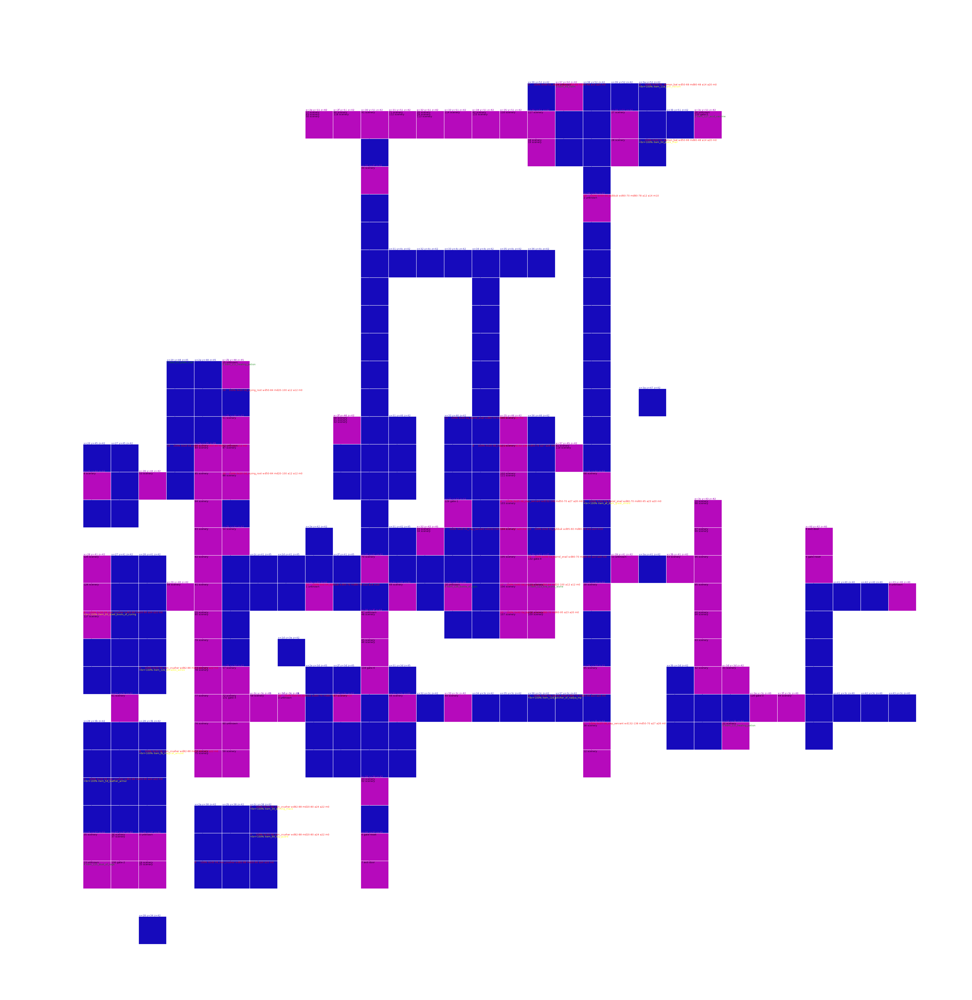
earth_world_quaking_cavern
Item Memory used 7
Creatures score 57
object index 3 exit-door Entrance -> earth_world_false_pit_cavern pos( 9 ,0 ,9),unknown( 6 ,0),destMapIndex( 15),rot( 1),fineY( 0)
0 item_10a_cune
1 item_117_brass_key
2 item_a5_shield_of_resist
3 item_11c_healing_potion
4 item_6_keenest_long_sword
5 item_139_soul_pod_14_sp
6 item_12e_dorados_ashes
7 item_10a_cune
8 item_12e_dorados_ashes
9 item_10a_cune
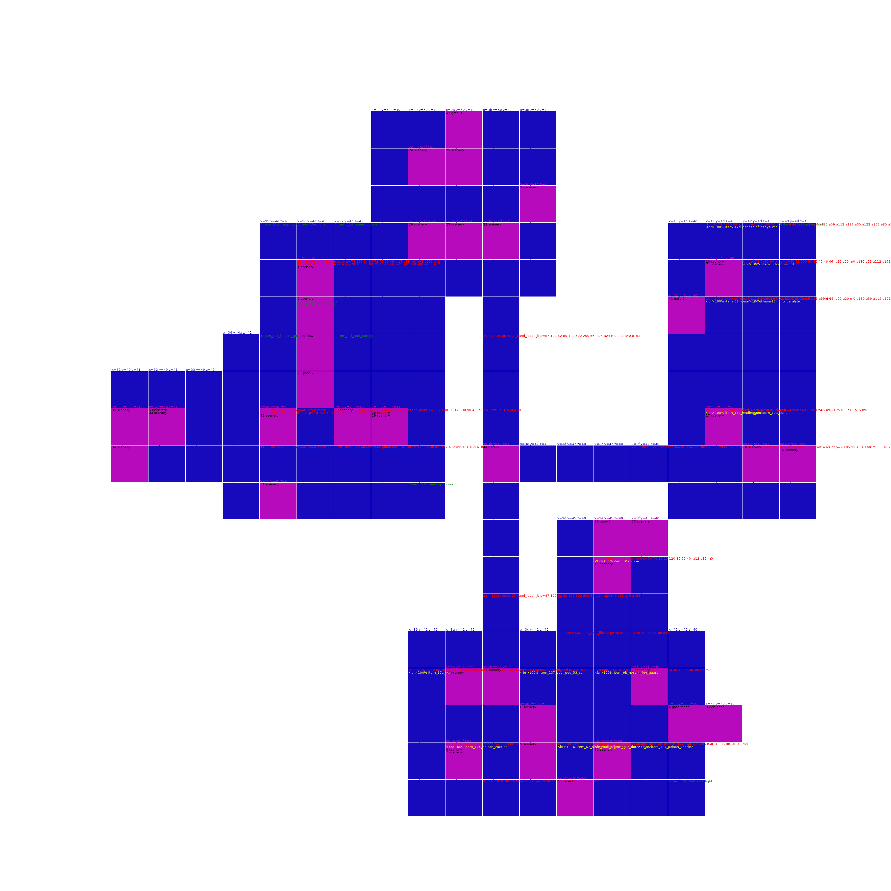
earth_world_false_pit_cavern
Item Memory used 10
Creatures score 72
b 08_guardian_b 100% 0x30 pw60 42 125 62 178 179 124 63 a15 a16 m0 a92 a70 a148 a92 a70 a218
100% item_10a_cune
c 08_guardian_b 100% 0x30 pw60 42 125 62 178 179 124 63 a15 a16 m0 a92 a70 a148 a92 a70 a218
object index 1 exit-door Bridge -> earth_world_quaking_cavern pos( 0 ,0 ,0),unknown(249 ,0),destMapIndex( 12),rot( 2),fineY( 0)
object index 3 exit-door Entrance -> human_world_solitary_region pos( 8 ,2 ,8),unknown( 0 ,0),destMapIndex( 4),rot( 2),fineY( 0)
object index 11 exit-door Exit -> illusion_world_bewilderment_domain pos( 18 ,0 ,18),unknown( 0 ,0),destMapIndex( 8),rot( 3),fineY( 0)
object index 16 exit-totem Totem -> illusion_world_dream_domain pos( 0 ,5 ,0),unknown( 1 ,16),destMapIndex( 0),rot( 0),fineY( 2)
object index 19 exit-totem Jump in -> death_world_dark_castle_layer pos( 0,243 ,0),unknown( 0 ,0),destMapIndex( 0),rot( 0),fineY( 0)
0 item_11e_anti_venom
1 item_11f_anti_paralytic
2 item_10e_sacred_feather
3 item_11f_anti_paralytic
4 item_12e_dorados_ashes
5 item_12e_dorados_ashes
6 item_11c_healing_potion
7 item_11c_healing_potion
8 item_11c_healing_potion
9 item_120_divine_symbol
a item_127_acid_vaccine
b item_11d_magic_potion
c item_129_sealed_sword_stone
d item_11c_healing_potion
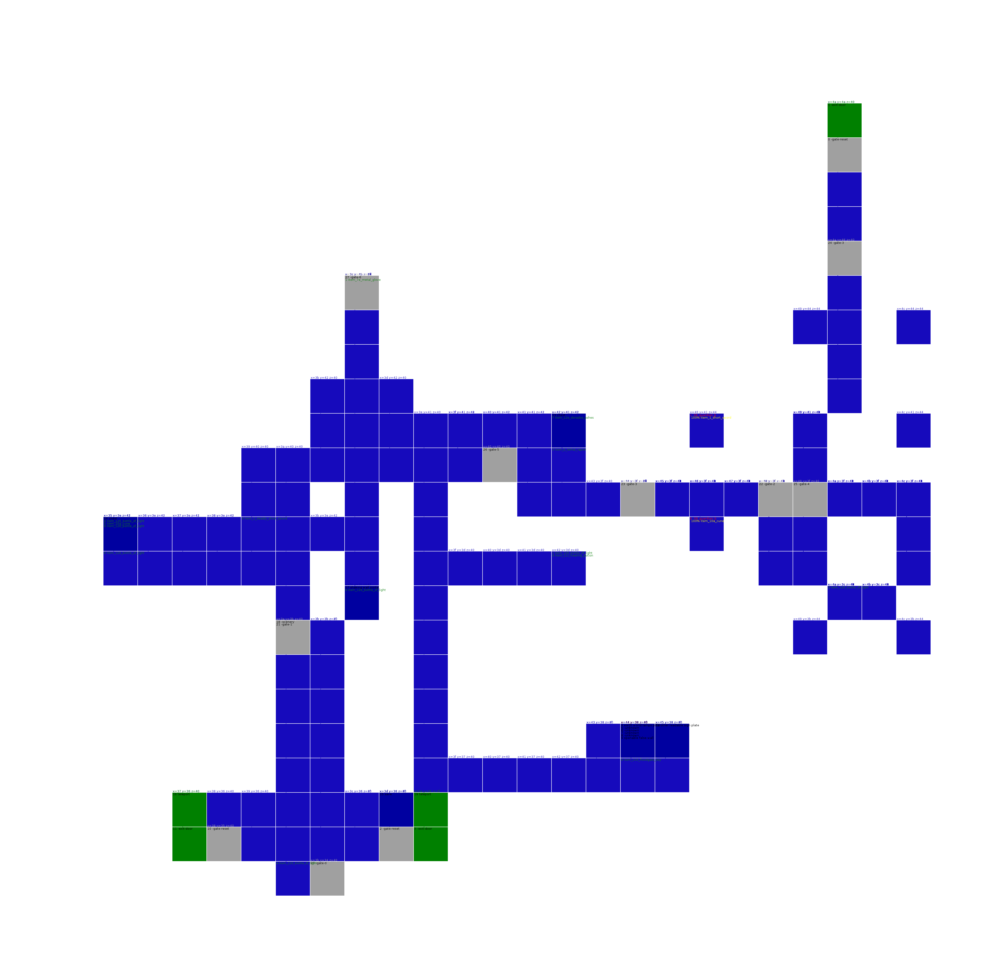
earth_world_hostile_rock_cavern
Item Memory used 6
Creatures score 77
21 04_dread_knight 100% 0x10 pw115 100 85 102 150 130 128 95 a45 a40 m11 a190 a145 a112 a110 a155 a245
100% item_10a_cune
object index 1 exit-door Entrance -> death_world_dark_castle_layer pos( 4,255 ,4),unknown( 0 ,0),destMapIndex( 25),rot( 3),fineY( 0)
object index 3 exit-totem Boss room -> water_world_white_rain_area pos( 0,253 ,0),unknown( 2,248),destMapIndex( 0),rot( 16),fineY( 3)
0 item_128_spirit_book
1 item_c7_priest_ring_of_fire
2 item_9d_frosty_leg_guard
3 item_11c_healing_potion
4 item_136_soul_pod_5_sp
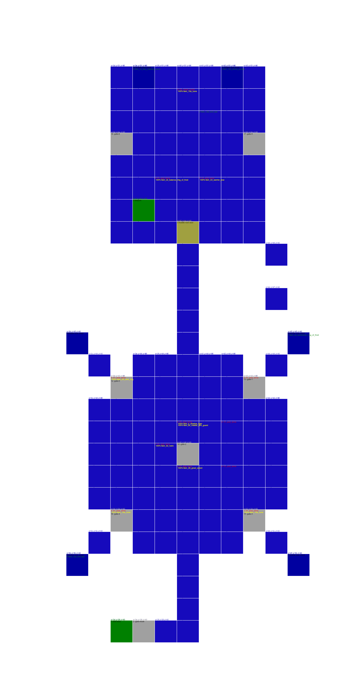
Fire World
fire_world_burning_cavern
Item Memory used 5
Creatures score 102
object index 37 exit-door Entrance -> human_world_hidden_region pos(252 ,0,252),unknown( 1 ,1),destMapIndex( 5),rot(255),fineY( 0)
object index 93 exit-portal Room -> illusion_world_worship_domain pos( 0 ,15 ,0),unknown(249 ,0),destMapIndex( 0),rot( 0),fineY( 0)
object index 94 exit-portal Platform -> fire_world_ashen_cavern pos( 4 ,33 ,4),unknown(252 ,0),destMapIndex( 0),rot( 0),fineY( 0)
0 item_11e_anti_venom
1 item_120_divine_symbol
2 item_4c_devil_crown
3 item_10a_cune
4 item_106_amulet_of_recovery
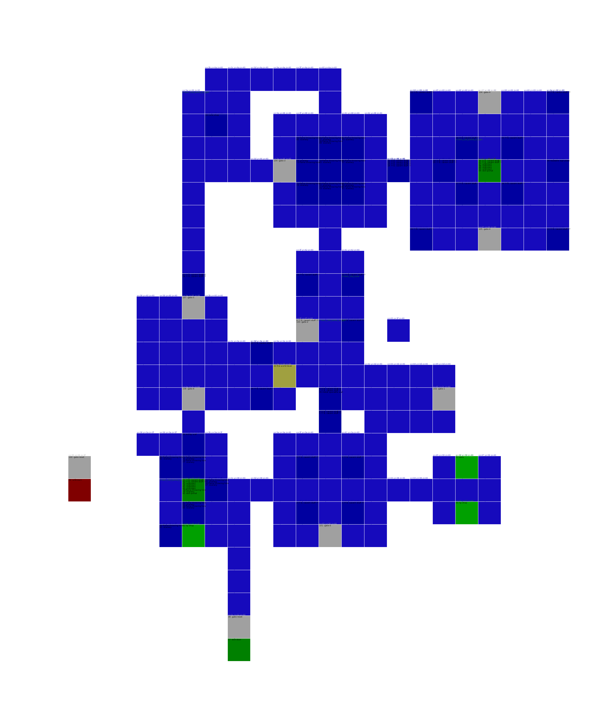
fire_world_molten_cavern
Item Memory used 9
Creatures score 122
21 02_dead_abraxus 100% 0x10 pw185 185 185 200 40 120 130 140 a80 a90 m12
100% item_11f_anti_paralytic
30 00_abraxus 100% 0x10 pw85 85 85 600 10 100 100 100 a80 a90 m12
31 0c_fat_mole_c 100% 0x5 pw0 0 0 0 0 0 0 0 a0 a0 m13
100% item_59_mystic_great_helm
32 08_fat_mole_b 100% 0x5 pw0 0 0 0 0 0 0 0 a0 a0 m13
100% item_120_divine_symbol
object index 19 exit-portal Platform -> illusion_world_worship_domain pos( 0 ,15 ,0),unknown( 6 ,0),destMapIndex( 0),rot( 0),fineY( 2)
object index 27 exit-portal Abraxus -> illusion_world_worship_domain pos( 0 ,0 ,0),unknown(249 ,0),destMapIndex( 0),rot( 0),fineY( 0)
0 item_11c_healing_potion
1 item_12e_dorados_ashes
2 item_11d_magic_potion
3 item_10a_cune
4 item_15_keenest_broad_sword
5 item_4e_helm
6 item_11f_anti_paralytic
7 item_11c_healing_potion
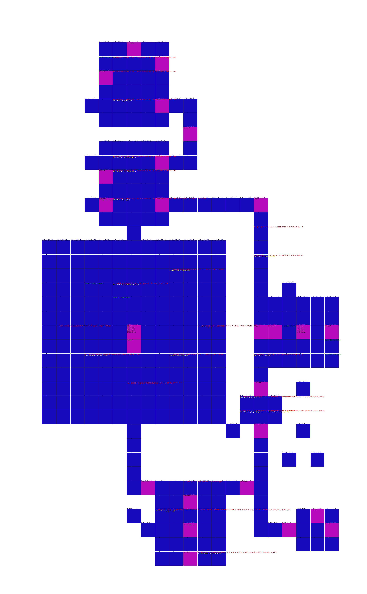
fire_world_phoenix_cave
Item Memory used 10
Creatures score 0
object index 0 exit-door Entrance -> human_world_hidden_region pos(252 ,0,252),unknown( 0 ,0),destMapIndex( 5),rot(255),fineY( 0)
object index 1 exit-door Exit -> human_world_cursed_region pos(249 ,0,249),unknown( 0 ,0),destMapIndex( 1),rot( 2),fineY(239)
0 item_123_fire_world_stone
1 item_11d_magic_potion
2 item_11f_anti_paralytic
3 item_11c_healing_potion
4 item_11d_magic_potion
5 item_127_acid_vaccine
6 item_11d_magic_potion
7 item_11c_healing_potion
8 item_11c_healing_potion
9 item_136_soul_pod_5_sp
a item_120_divine_symbol
b item_12e_dorados_ashes
c item_10a_cune
d item_86_gauntlet_of_resist
e item_120_divine_symbol
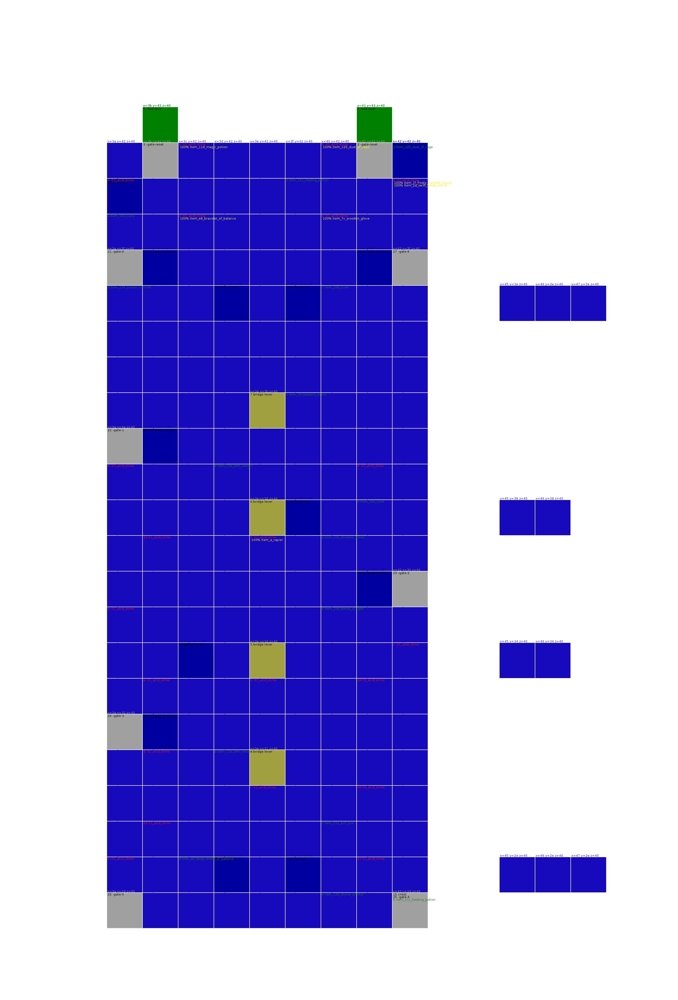
fire_world_ashen_cavern
Item Memory used 6
Creatures score 3044
20 0c_ebony_knight 100% 0x100 pw97 125 127 9999 75 109 179 198 a70 a50 m14 a305 a252 a230 a225 a230 a305 a300 a190 a128
object index 6 exit-portal Start -> illusion_world_dream_domain pos( 0 ,4 ,0),unknown( 0 ,0),destMapIndex( 0),rot( 0),fineY( 0)
object index 17 exit-portal Cerberus -> fire_world_burning_cavern pos(255 ,7,255),unknown( 6 ,8),destMapIndex( 0),rot( 0),fineY( 3)
0 item_12e_dorados_ashes
1 item_125_dust_of_rage
2 item_3f_battle_axe
3 item_125_dust_of_rage
4 item_11c_healing_potion
6 item_11d_magic_potion
7 item_12b_pitcher_of_nadya
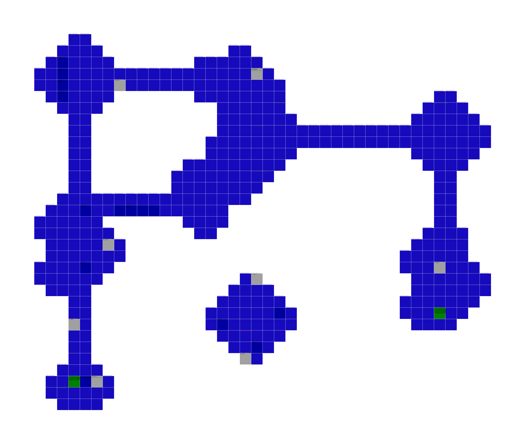
Water World
water_world_impure_pool_area
Item Memory used 6
Creatures score 27
30 00_fat_mole_f 100% 0x5 pw0 0 0 0 0 0 0 0 a0 a0 m24
31 04_blank 100% 0x5 pw90 90 90 90 90 90 90 90 a0 a0 m25
object index 9 exit-door Entrance -> earth_world_poisonous_cavern pos( 9 ,1 ,9),unknown( 0 ,0),destMapIndex( 27),rot( 0),fineY( 0)
object index 11 exit-door Flush down -> human_world_forgotten_region pos( 5 ,0 ,5),unknown( 1 ,1),destMapIndex( 6),rot( 3),fineY( 0)
object index 14 exit-totem Totem -> illusion_world_gloomy_domain pos( 0,254 ,0),unknown( 3,248),destMapIndex( 0),rot( 0),fineY( 3)
0 item_11d_magic_potion
1 item_11c_healing_potion
2 item_123_fire_world_stone
3 item_11e_anti_venom
4 item_3_long_sword
5 item_122_evil_eye
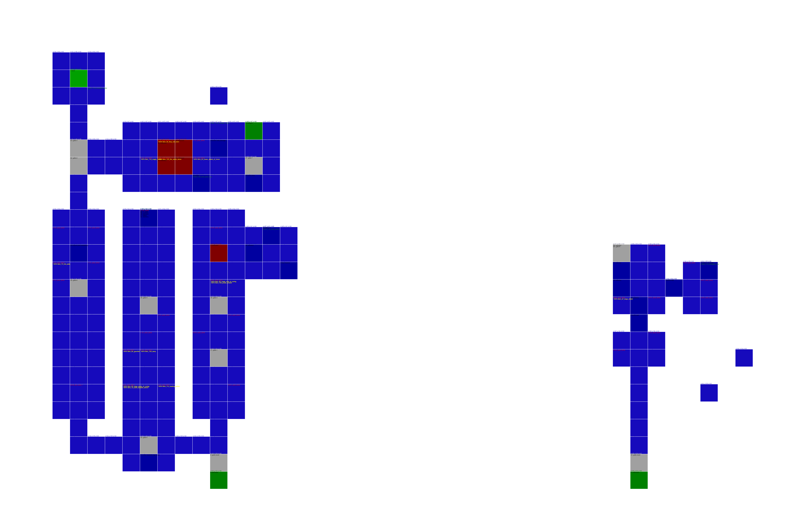
water_world_sunken_river_area
Item Memory used 6
Creatures score 75
object index 1 exit-door Entrance -> death_world_lingering_curse_layer pos(253,254,253),unknown( 1 ,1),destMapIndex( 14),rot( 1),fineY( 0)
object index 5 exit-door Pool -> human_world_solitary_region pos( 13 ,0 ,13),unknown( 0 ,0),destMapIndex( 4),rot(255),fineY( 0)
0 item_11c_healing_potion
1 item_cb_balance_ring_of_frost
2 item_136_soul_pod_5_sp
3 item_11c_healing_potion
4 item_11f_anti_paralytic
5 item_11f_anti_paralytic
6 item_10a_cune
7 item_11c_healing_potion
1c item_11f_anti_paralytic
1d item_128_spirit_book
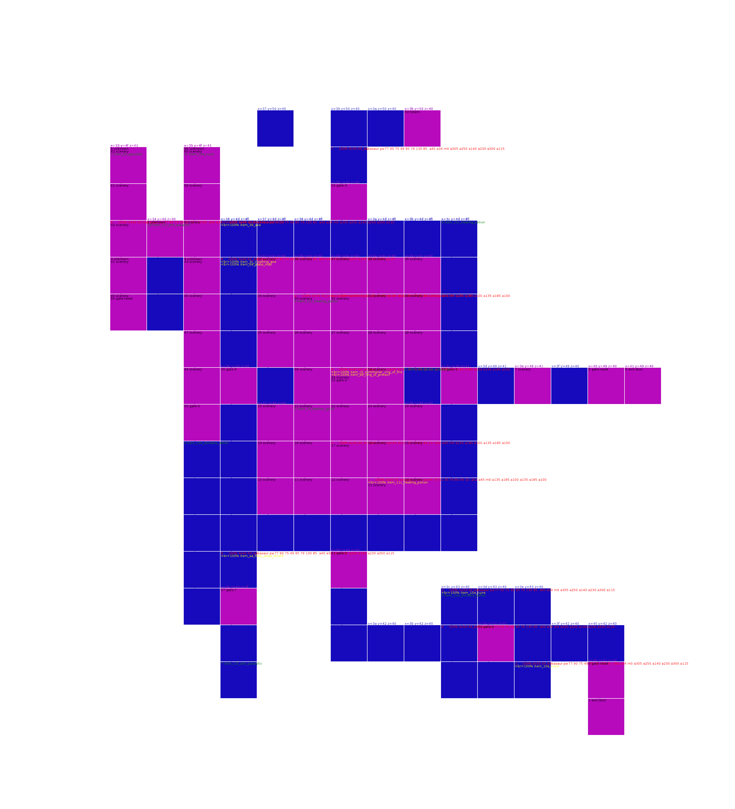
water_world_white_rain_area
Item Memory used 6
Creatures score 14940
20 05_magi_magus 100% 0x10 pw80 120 108 140 155 362 600 180 a150 a170 m19
100% item_11c_healing_potion
object index 4 exit-door Entrance -> death_world_undead_layer pos( 0 ,1 ,0),unknown( 0 ,0),destMapIndex( 26),rot( 0),fineY(248)
object index 6 exit-totem Totem -> earth_world_hostile_rock_cavern pos( 0,255 ,0),unknown( 11 ,0),destMapIndex( 0),rot( 0),fineY( 3)
0 item_10a_cune
1 item_41_keenest_battle_axe
2 item_122_evil_eye
3 item_123_fire_world_stone
4 item_126_bottle_of_light
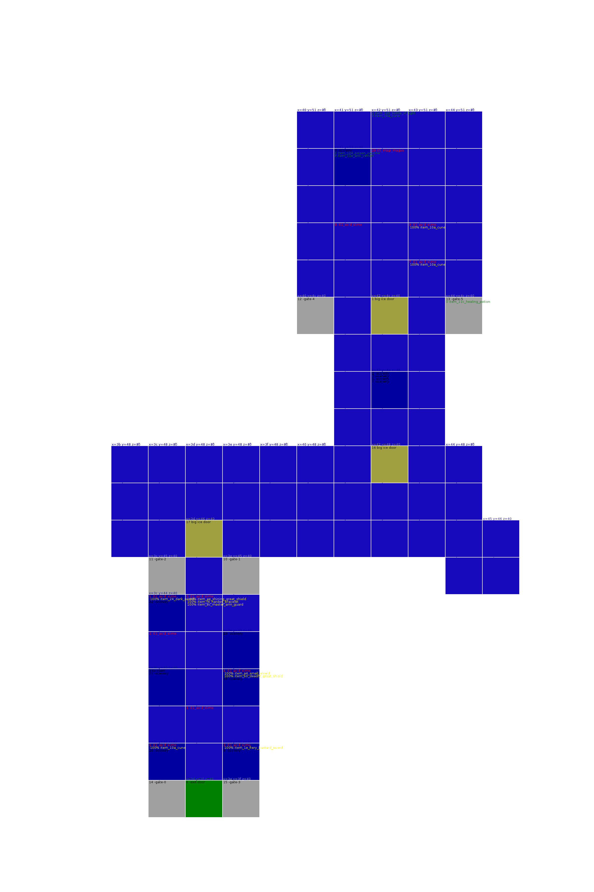
water_world_watery_labyrinth_area
Item Memory used 7
Creatures score 75
object index 8 exit-door Entrance -> shadow_tower_part2b pos( 3 ,3 ,3),unknown( 0 ,0),destMapIndex( 40),rot( 1),fineY(248)
object index 9 exit-door Exit -> monster_world_false_eye_area pos(247 ,0,247),unknown( 0 ,0),destMapIndex( 2),rot( 1),fineY( 0)
0 item_11d_magic_potion
1 item_11c_healing_potion
2 item_11e_anti_venom
3 item_11d_magic_potion
4 item_91_steel_boots
5 item_11e_anti_venom
6 item_12e_dorados_ashes
7 item_11c_healing_potion
8 item_11c_healing_potion
9 item_36_swift_morning_star
a item_139_soul_pod_14_sp
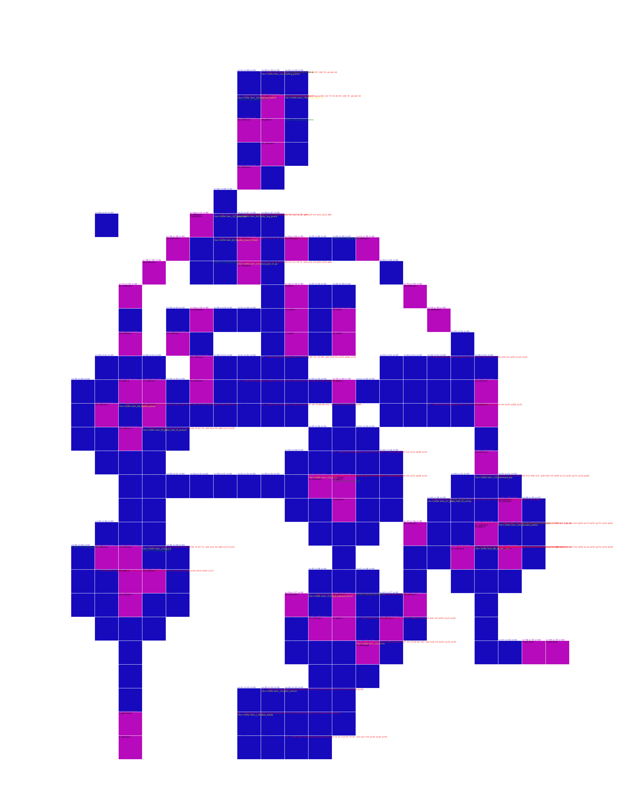
Monster World
monster_world_false_eye_area
Item Memory used 5
Creatures score 72
30 02_lizard_servant 100% 0x10 pw150 150 150 150 150 150 150 150 a24 a24 m30
31 06_lizard_servant 100% 0x10 pw150 150 150 150 150 150 150 150 a24 a24 m30
object index 9 exit-door Entrance -> water_world_watery_labyrinth_area pos(242 ,0,242),unknown( 0 ,0),destMapIndex( 32),rot( 1),fineY( 0)
object index 10 exit-totem Totem -> death_world_lingering_curse_layer pos( 1,242 ,1),unknown(249 ,0),destMapIndex(252),rot( 0),fineY( 3)
0 item_7b_leather_glove
1 item_11c_healing_potion
2 item_11c_healing_potion
3 item_125_dust_of_rage
4 item_126_bottle_of_light
5 item_125_dust_of_rage
6 item_139_soul_pod_14_sp
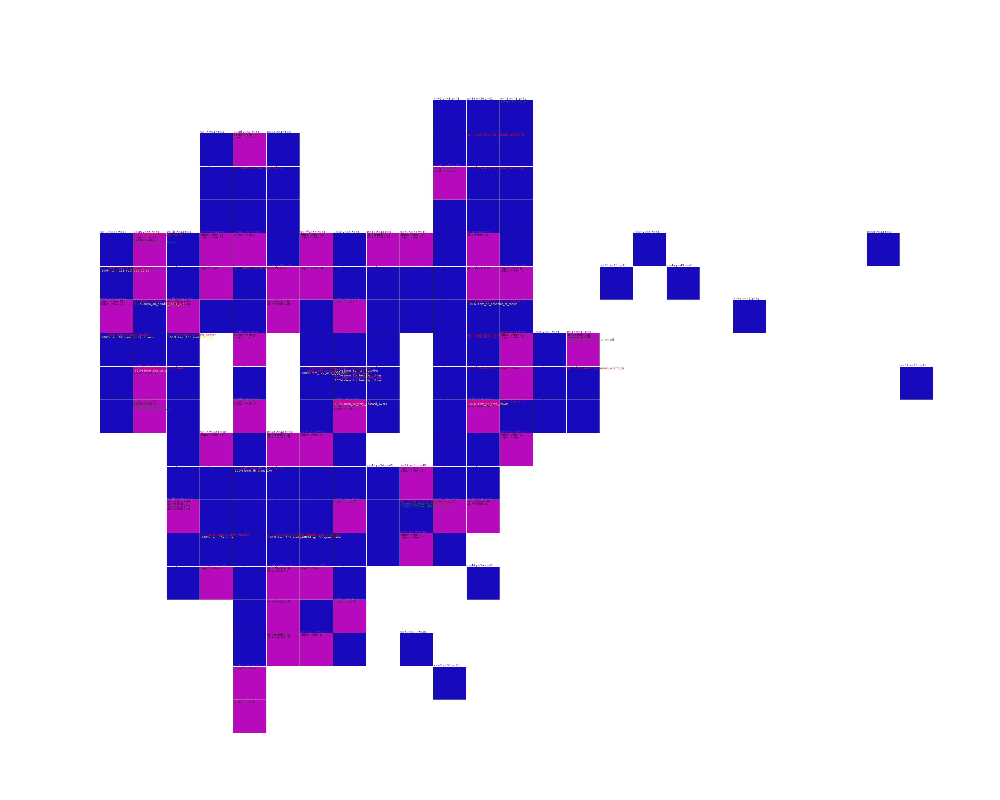
monster_world_screeching_area
Item Memory used 4
Creatures score 258
21 0e_necron 100% 0x10 pw75 78 132 360 405 146 525 239 a85 a90 m22 a340 a290 a460 a100 a120 a400 a350 a250 a270
30 01_auriel_c 100% 0x10 pw250 250 250 520 490 580 590 370 a90 a110 m21 a550 a450 a540 a550 a450 a540
object index 0 exit-door Entrance -> shadow_tower_part1c pos(255 ,9,255),unknown( 7 ,0),destMapIndex( 0),rot( 0),fineY(248)
object index 3 exit-totem Totem -> human_world_forgotten_region pos(255 ,1,255),unknown( 4 ,0),destMapIndex( 0),rot( 0),fineY( 1)
object index 6 exit-totem Necron -> death_world_dark_castle_layer pos( 0,254 ,0),unknown(251 ,0),destMapIndex( 0),rot( 0),fineY( 0)
0 item_126_bottle_of_light
1 item_7c_wooden_glove
2 item_11c_healing_potion
1c item_120_divine_symbol
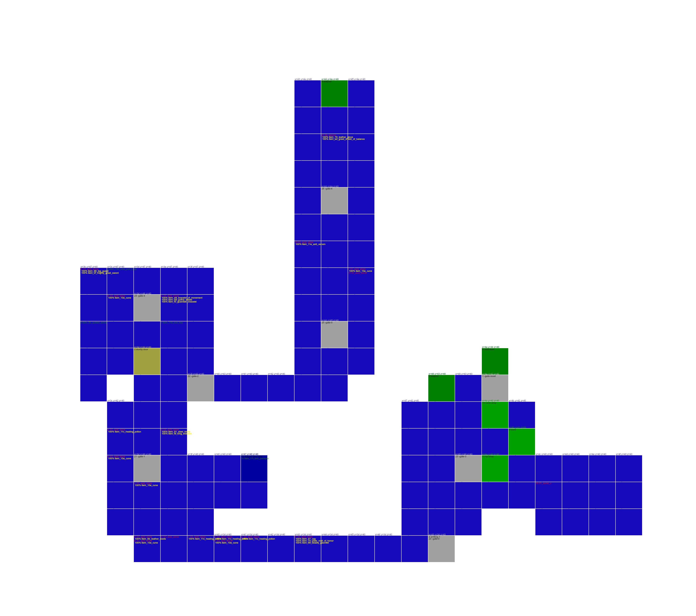
Illusion World
illusion_world_gloomy_domain
Item Memory used 4
Creatures score 92
30 0e_blank 100% 0x20 pw0 0 0 0 0 0 0 0 a0 a0 m39
object index 1 exit-door Entrance -> shadow_tower_part2b pos( 0 ,3 ,0),unknown( 0 ,0),destMapIndex( 40),rot( 1),fineY(248)
object index 3 exit-door Ladder down -> shadow_tower_part3c pos(252 ,6,252),unknown( 0 ,0),destMapIndex( 41),rot( 3),fineY(248)
object index 10 exit-totem Totem -> water_world_impure_pool_area pos( 0 ,6 ,0),unknown( 6 ,0),destMapIndex( 0),rot( 0),fineY( 2)
2 item_11d_magic_potion
3 item_11c_healing_potion
5 item_11f_anti_paralytic
6 item_122_evil_eye
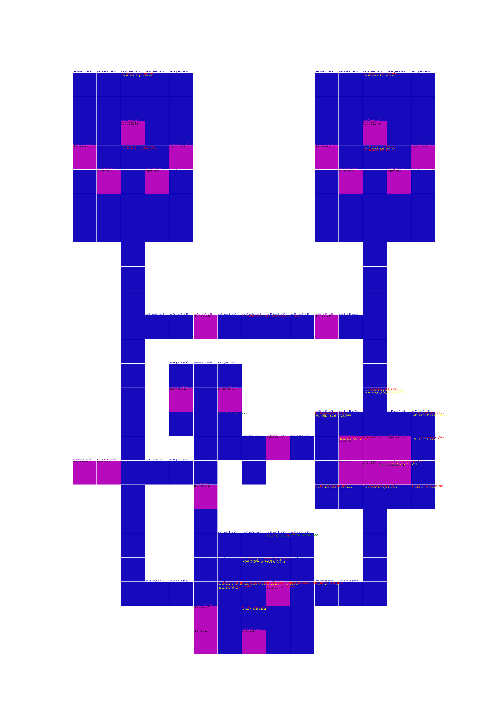
illusion_world_bewilderment_domain
Item Memory used 12
Creatures score 195
object index 18 exit-door Exit -> death_world_undead_layer pos(239 ,1,239),unknown( 0 ,0),destMapIndex( 26),rot( 1),fineY( 0)
object index 20 exit-door Entrance -> earth_world_false_pit_cavern pos(245 ,0,245),unknown( 1 ,1),destMapIndex( 15),rot( 3),fineY( 0)
0 item_128_spirit_book
1 item_11c_healing_potion
2 item_124_poison_vaccine
3 item_11e_anti_venom
4 item_11e_anti_venom
5 item_7d_wooden_glove
6 item_123_fire_world_stone
7 item_12e_dorados_ashes
8 item_10a_cune
9 item_120_divine_symbol
a item_125_dust_of_rage
b item_11d_magic_potion
c item_11c_healing_potion
d item_116_key_of_delusion
e item_116_key_of_delusion
f item_116_key_of_delusion
10 item_116_key_of_delusion
11 item_11c_healing_potion
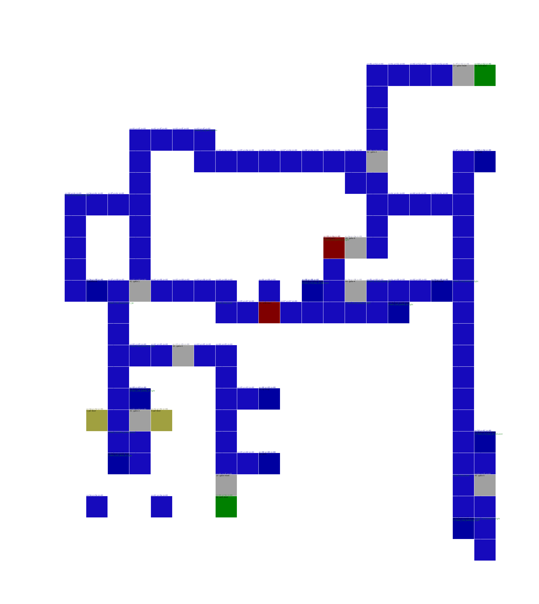
illusion_world_worship_domain
Item Memory used 5
Creatures score 70
21 04_wildowess 100% 0x5 pw66 84 55 300 112 400 98 30 a150 a170 m28 a205 a150 a340
100% item_10a_cune
22 01_gorthaur 100% 0x10 pw85 70 50 250 60 180 50 60 a30 a36 m27 a195 a110 a180
100% item_138_soul_pod_29_sp
23 08_fester 100% 0x5 pw120 56 49 559 58 579 59 60 a50 a60 m29
100% item_11e_anti_venom
30 02_fat_mole_d 100% 0x80 pw0 0 0 0 0 0 0 0 a0 a0 m26
object index 1 exit-door Entrance -> death_world_dark_castle_layer pos(247 ,0,247),unknown( 1 ,1),destMapIndex( 25),rot( 2),fineY( 0)
object index 6 exit-portal Connection -> fire_world_molten_cavern pos( 0 ,0 ,0),unknown( 2 ,0),destMapIndex(224),rot( 0),fineY( 2)
object index 8 exit-portal To Boss -> fire_world_molten_cavern pos( 0 ,12 ,0),unknown( 2 ,0),destMapIndex(240),rot( 0),fineY( 1)
object index 10 exit-portal Exit -> fire_world_burning_cavern pos(255,250,255),unknown(248 ,0),destMapIndex( 8),rot( 0),fineY( 0)
0 item_12e_dorados_ashes
1 item_df_ring_of_desire
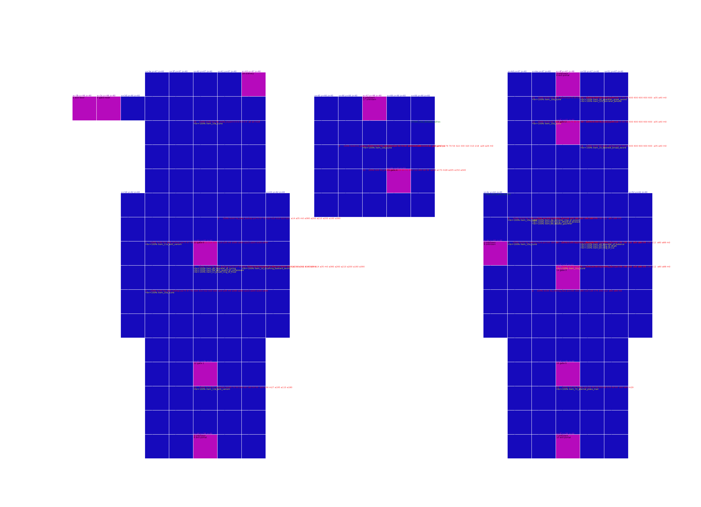
illusion_world_dream_domain
Item Memory used 4
Creatures score 155
20 01_disguise 100% 0x10 pw108 82 121 370 600 240 346 230 a90 a110 m20
100% item_da_sorcerer_ring_of_poison
object index 3 exit-portal Entrance -> fire_world_ashen_cavern pos( 0 ,1 ,0),unknown(246 ,16),destMapIndex( 16),rot( 8),fineY( 0)
object index 4 exit-totem Totem -> earth_world_false_pit_cavern pos( 0,248 ,0),unknown(246 ,0),destMapIndex( 0),rot( 0),fineY( 3)
0 item_5_long_sword
1 item_b6_caustic_tower_shield
2 item_10c_torch
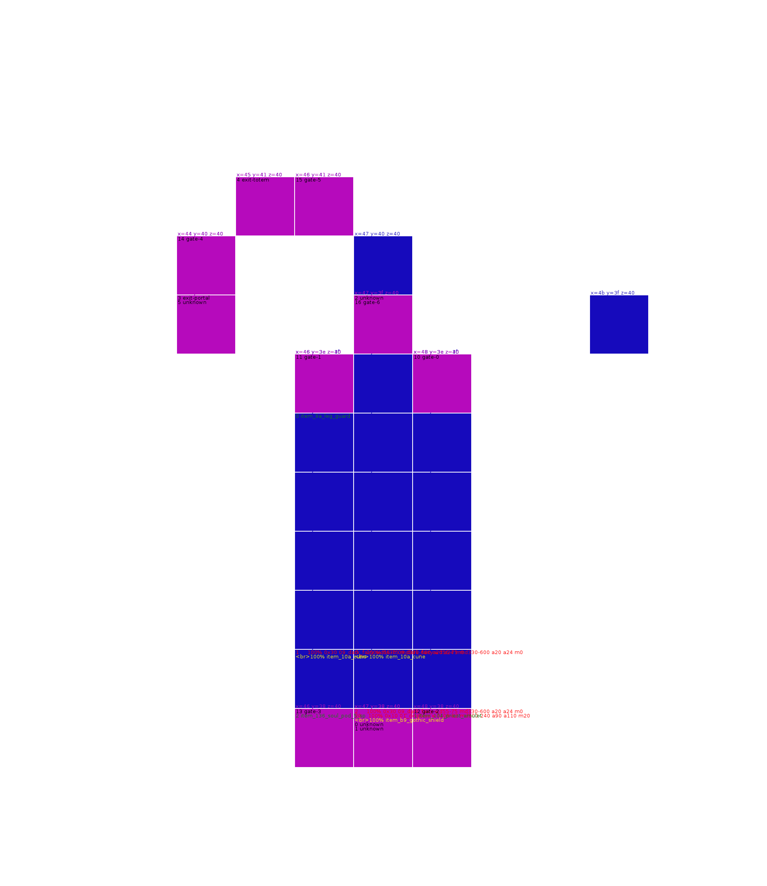
Death World
death_world_dark_castle_layer
Item Memory used 6
Creatures score 81
20 08_armored_guardian 100% 0x30 pw79 69 71 62 270 70 62 252 a100 a80 m36 a380 a460 a280 a365 a335 a240
100% item_10a_cune
object index 0 exit-door Prison -> earth_world_hostile_rock_cavern pos(248 ,0,248),unknown( 0 ,0),destMapIndex( 33),rot( 3),fineY( 0)
object index 2 exit-door Entrance -> illusion_world_worship_domain pos(250 ,2,250),unknown(248 ,0),destMapIndex( 9),rot( 1),fineY( 0)
object index 4 exit-totem Lower totem 1 -> monster_world_screeching_area pos( 0 ,4 ,0),unknown( 13 ,0),destMapIndex( 0),rot( 0),fineY( 2)
object index 7 exit-totem Lower totem 2 -> human_world_forgotten_region pos( 0,250 ,0),unknown( 5 ,0),destMapIndex( 0),rot( 0),fineY( 3)
object index 10 exit-totem Upper totem -> earth_world_false_pit_cavern pos(255,253,255),unknown(246 ,0),destMapIndex(248),rot( 0),fineY( 1)
0 item_11c_healing_potion
1 item_12e_dorados_ashes
2 item_127_acid_vaccine
3 item_124_poison_vaccine
4 item_10c_torch
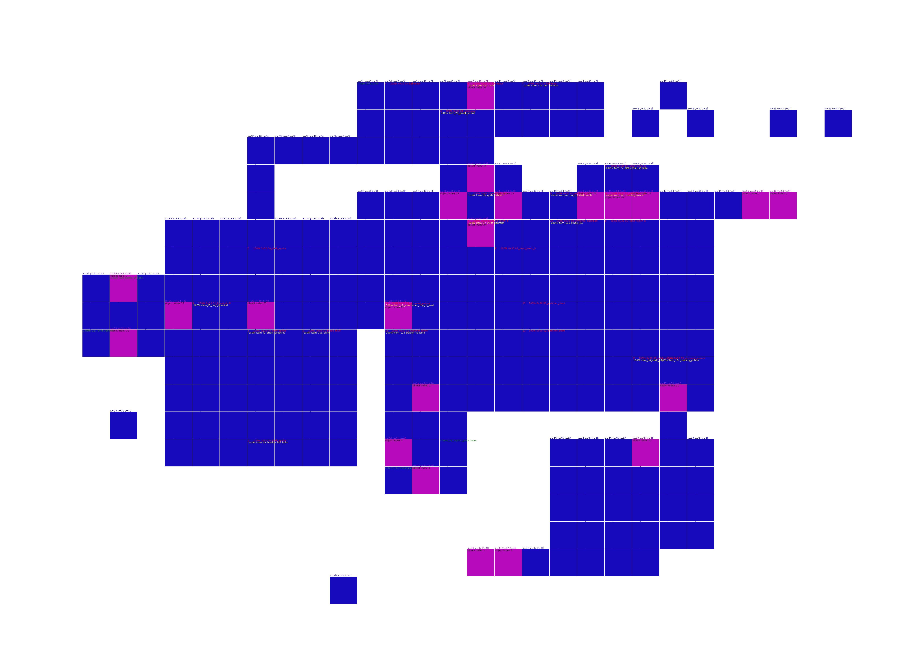
death_world_gate_of_the_dead
Item Memory used 3
Creatures score 492
20 0c_hollow_mage 100% 0x5 pw81 50 181 999 999 999 999 999 a44 a144 m23
100% item_dc_caustic_ring
object index 1 exit-door Entrance -> earth_world_poisonous_cavern pos(239 ,1,239),unknown( 1 ,1),destMapIndex( 27),rot( 0),fineY( 0)
object index 4 exit-totem Totem -> human_world_hidden_region pos( 0,251 ,0),unknown(254 ,0),destMapIndex( 0),rot( 0),fineY( 3)
0 item_136_soul_pod_5_sp
1 item_138_soul_pod_29_sp
2 item_53_harden_full_helm
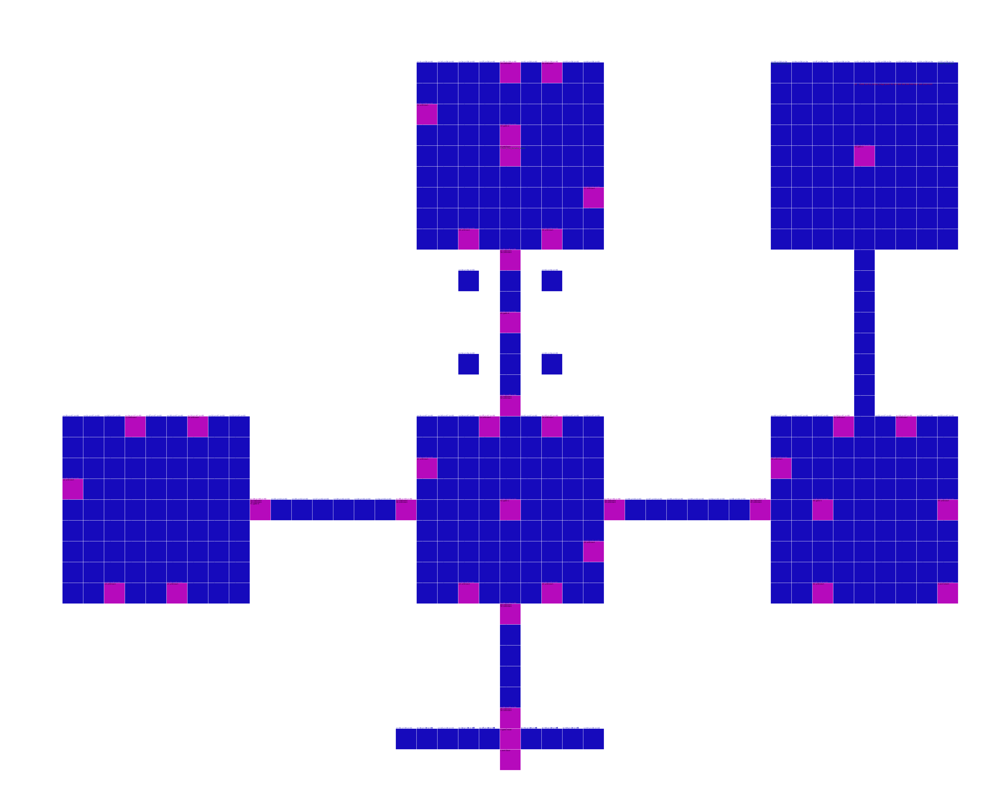
death_world_lingering_curse_layer
Item Memory used 3
Creatures score 132
5 05_unknown_g 100% 0x40 pw60 50 70 210 126 230 110 130 a62 a92 m0
6 05_unknown_g 100% 0x40 pw60 50 70 210 126 230 110 130 a62 a92 m0
7 05_unknown_g 100% 0x40 pw60 50 70 210 126 230 110 130 a62 a92 m0
30 0c_old_face 100% 0x20 pw50 40 50 220 210 230 200 95 a120 a110 m0
31 04_blank 100% 0x20 pw90 90 90 90 90 90 90 90 a0 a0 m31
object index 1 exit-door Door -> water_world_sunken_river_area pos( 1 ,0 ,1),unknown( 1 ,1),destMapIndex( 21),rot( 0),fineY( 0)
object index 2 exit-totem Box room -> monster_world_false_eye_area pos( 0,255 ,0),unknown(249 ,0),destMapIndex( 8),rot(248),fineY( 0)
0 item_136_soul_pod_5_sp
1 item_136_soul_pod_5_sp
2 item_9f_caustic_leg_guard
3 item_11c_healing_potion
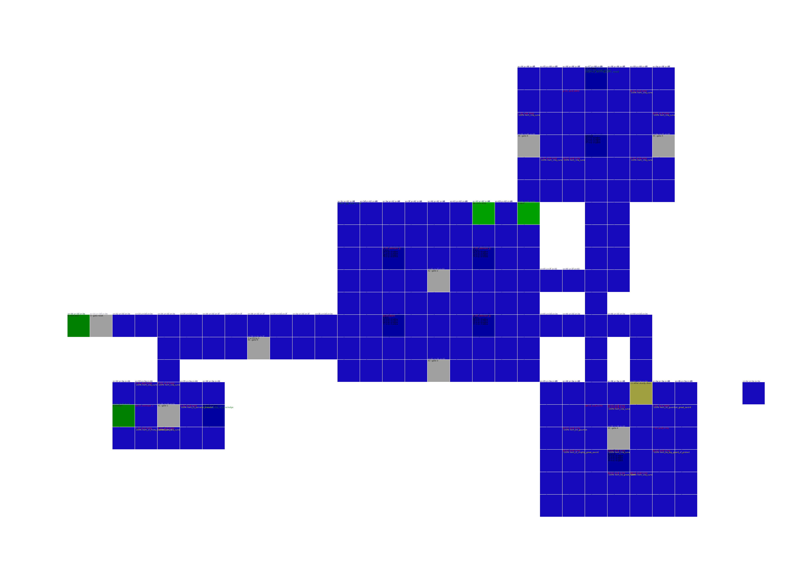
death_world_undead_layer
Item Memory used 10
Creatures score 405
21 04_king_edward 100% 0x20 pw220 70 230 600 600 600 600 600 a154 a150 m35 a50 a45 a50 a40 a40 a20 a90 a40 a80
30 01_unknown_b 100% 0x20 pw250 250 250 520 490 580 590 370 a90 a110 m34 a520 a450 a550 a620 a480 a550
31 09_pulsating_heart 100% 0x10 pw50 48 46 999 999 999 999 999 a0 a0 m0 a150 a100 a140
32 0d_fat_mole_e 100% 0x10 pw0 0 0 0 0 0 0 0 a0 a0 m33
object index 12 exit-door King's room -> water_world_white_rain_area pos(255,255,255),unknown( 1 ,1),destMapIndex( 32),rot(255),fineY( 0)
object index 15 exit-door Entrance -> illusion_world_bewilderment_domain pos(255 ,0,255),unknown( 0 ,0),destMapIndex( 8),rot( 3),fineY( 0)
0 item_124_poison_vaccine
1 item_116_key_of_delusion
2 item_125_dust_of_rage
3 item_11e_anti_venom
4 item_12e_dorados_ashes
5 item_11c_healing_potion
6 item_125_dust_of_rage
7 item_123_fire_world_stone
8 item_136_soul_pod_5_sp
9 item_10a_cune
a item_11c_healing_potion
1c item_11f_anti_paralytic
1d item_139_soul_pod_14_sp
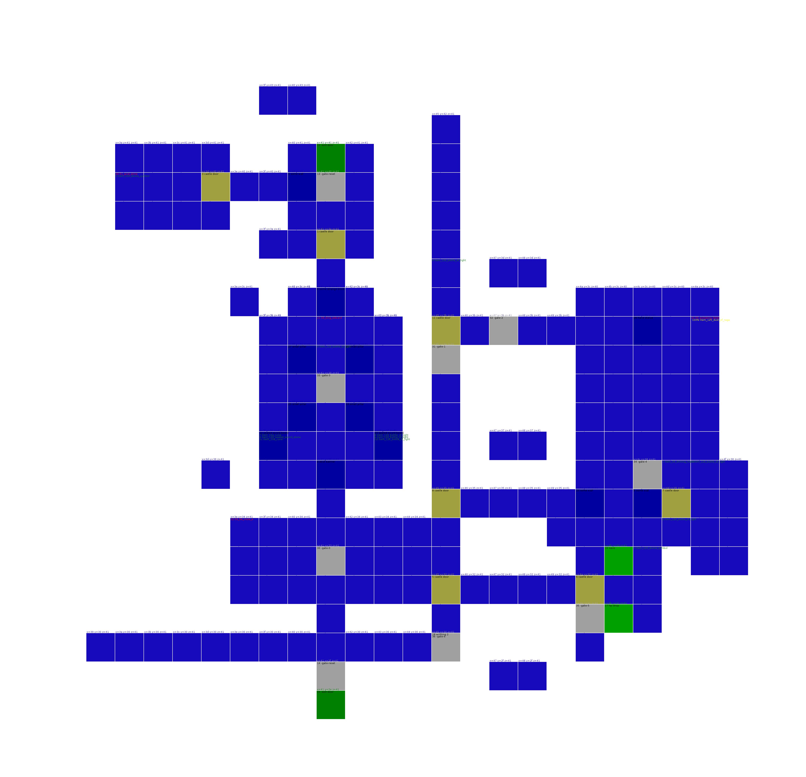
Shadow Tower
shadow_tower_part1
Item Memory used 0
Creatures score 0
object index 0 exit-door Tower Top -> shadow_tower_part2a pos( 4 ,1 ,4),unknown( 10 ,0),destMapIndex( 40),rot( 1),fineY(248)
object index 4 exit-door Edge -> shadow_tower_part3a pos( 0 ,2 ,0),unknown( 0 ,0),destMapIndex( 41),rot( 2),fineY(248)
object index 5 exit-door Top -> shadow_tower_part3a pos(251 ,1,251),unknown( 0 ,0),destMapIndex( 41),rot( 3),fineY(248)
object index 8 exit-door Middle -> earth_world_stone_cavern pos(247 ,5,247),unknown(246 ,0),destMapIndex( 28),rot( 1),fineY( 0)
object index 9 exit-door Edge -> monster_world_screeching_area pos( 3 ,0 ,3),unknown( 1 ,1),destMapIndex( 17),rot( 0),fineY( 0)
object index 11 exit-door Middle -> shadow_tower_part3b pos( 0 ,5 ,0),unknown( 0 ,0),destMapIndex( 41),rot( 2),fineY(248)

shadow_tower_part2
Item Memory used 0
Creatures score 0
object index 0 exit-door Top left -> shadow_tower_part1a pos( 0 ,3 ,0),unknown( 0 ,0),destMapIndex( 0),rot(255),fineY(248)
object index 4 exit-door Top right -> shadow_tower_part3a pos( 4 ,1 ,4),unknown( 0 ,0),destMapIndex( 41),rot( 0),fineY(248)
object index 5 exit-door Edge -> water_world_watery_labyrinth_area pos(245 ,0,245),unknown( 0 ,0),destMapIndex( 32),rot( 3),fineY( 0)
object index 7 exit-door Middle -> illusion_world_gloomy_domain pos( 0 ,0 ,0),unknown( 1 ,1),destMapIndex( 9),rot( 2),fineY( 0)
object index 9 exit-door Upper -> human_world_solitary_region pos( 13 ,0 ,13),unknown( 0 ,0),destMapIndex( 4),rot(255),fineY( 0)
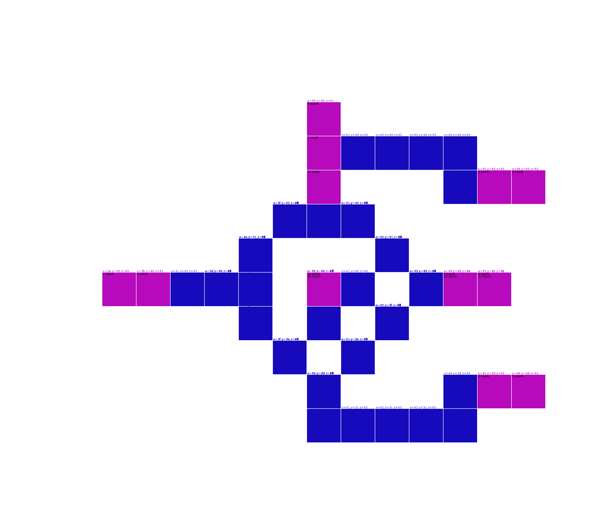
shadow_tower_part3
Item Memory used 0
Creatures score 0
object index 0 exit-door Top right -> shadow_tower_part1c pos(250 ,7,250),unknown( 0 ,0),destMapIndex( 0),rot( 1),fineY(248)
object index 3 exit-door Top left -> shadow_tower_part2a pos(253 ,3,253),unknown( 0 ,0),destMapIndex( 40),rot( 1),fineY(248)
object index 5 exit-door Bottom middle -> human_world_solitary_region pos( 1 ,0 ,1),unknown( 1 ,1),destMapIndex( 4),rot( 0),fineY( 0)
object index 7 exit-door Top edge -> earth_world_stone_cavern pos( 1 ,0 ,1),unknown( 0 ,7),destMapIndex( 28),rot( 0),fineY( 0)
object index 9 exit-door Bottom -> shadow_tower_part1b pos(255 ,6,255),unknown( 0 ,0),destMapIndex( 0),rot( 1),fineY(248)
object index 10 exit-door Fence -> illusion_world_gloomy_domain pos( 6 ,0 ,6),unknown( 0 ,8),destMapIndex( 13),rot( 1),fineY( 0)
object index 13 exit-door Bottom end -> shadow_tower_part1c pos( 3 ,9 ,3),unknown( 9 ,0),destMapIndex( 0),rot( 1),fineY(248)

Void
void